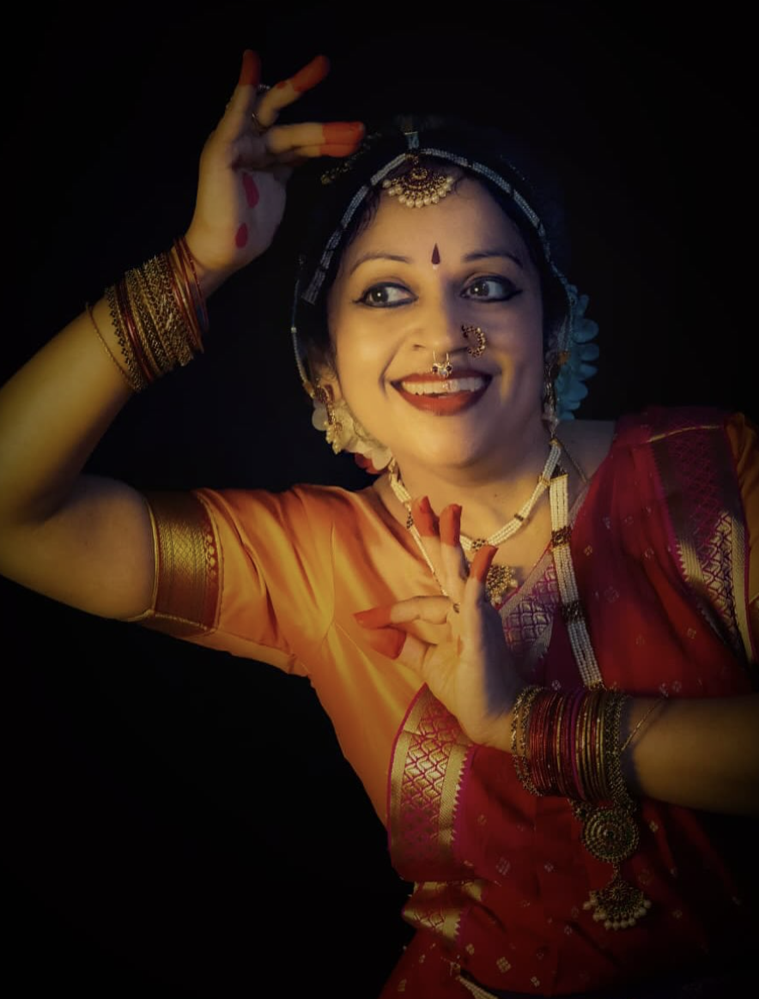

Vid. Ramya Basker


Vidushi Ramya Basker is a classically trained Bharatanatyam Dancer with 20+ years of perfoming experience and 5+ years of teaching experience.She began dancing under the skilled tutelage of Vid. Manjula Paramesh and later Vid. Padma Hemanth.
Vid. Ramya Basker began her teaching journey in January 2020 and currently has a large team of 30+ students. In addition to hosting small seva concerts at local temples, she continuosly hosts her annual event "Nritya-Sadhana" to showcase the work of her and her students.